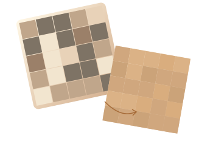
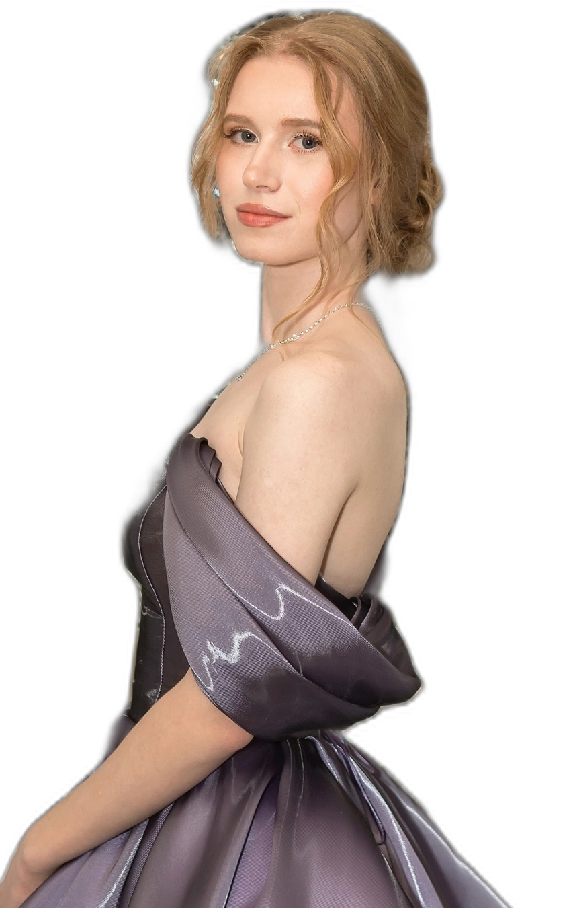
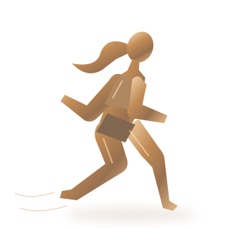
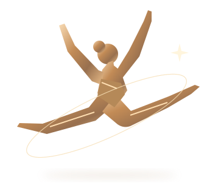
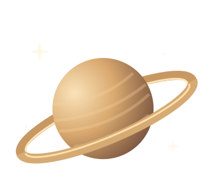
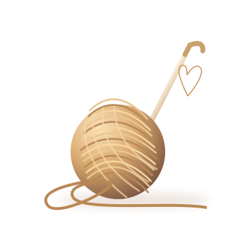
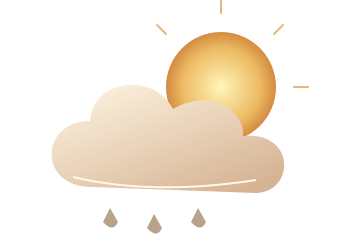

pixels → possibilities01 / обработка изображений
Свёртка изображений
Учебный проект по обработке RGB-изображений: свёрточные ядра и разные способы работы с границами изображения.
Смотреть на GitHub✦ Личная страница · Санкт-Петербург
Студентка 2 курса СПбГУ.
Программная инженерия.
Привет! Я Маша. Люблю разбираться в сложных вещах, писать код и находить маленькие радости за пределами экрана.
между логикой и вдохновением

немного кода,
немного космоса
то, что меня вдохновляет
Когда закрываю редактор кода, открывается другая часть моей вселенной.

Маленькое признание«Если я не отвечаю, скорее всего, я в зале».

Маленькое признание«В детстве научилась летать. Приземляться оказалось сложнее».

Маленькое признание«Если в книге нет вселенской загадки, зачем я её читала?»

Маленькое признание«Один крючок, моток пряжи и минус шесть часов свободного времени».
01 / немного обо мне
Всё начинается с любопытства
Мне всегда хотелось понять,
как всё устроено.
Я родилась и выросла в Волгограде, училась в физико-математическом лицее. В девятом классе поняла, что больше всего меня увлекают математика, физика и информатика. Так появилось направление, в котором захотелось двигаться дальше.
Окончила школу с золотой медалью, хорошо сдала ЕГЭ и поступила в Санкт-Петербургский государственный университет. Сейчас я на втором курсе программной инженерии: учусь, пишу код и постепенно собираю свой опыт из небольших проектов.
Большая часть времени уходит на учёбу и программирование. Но в моей жизни по-прежнему есть место спорту, книгам и вещам, которые можно сделать своими руками.
02 / от идеи к коду
учусь, пробую, создаю
Учебные задачи, в которых теория постепенно становится чем-то работающим.

pixels → possibilities01 / обработка изображений
Учебный проект по обработке RGB-изображений: свёрточные ядра и разные способы работы с границами изображения.
Смотреть на GitHub
a little forecast for today02 / android-приложение
Приложение с прогнозом через Open-Meteo, геокодированием и локальным хранением данных.
Учебный проект · ссылку добавлю позже
03 / сейчас в работе
Участвую в развитии открытого verihogg-lint: добавляю правила статического анализа, диагностики и тесты.
Репозиторий проекта03 / продолжим знакомство
Мои проекты и маленькие шаги в разработке живут на GitHub.
Заглядывайте — буду рада знакомству.